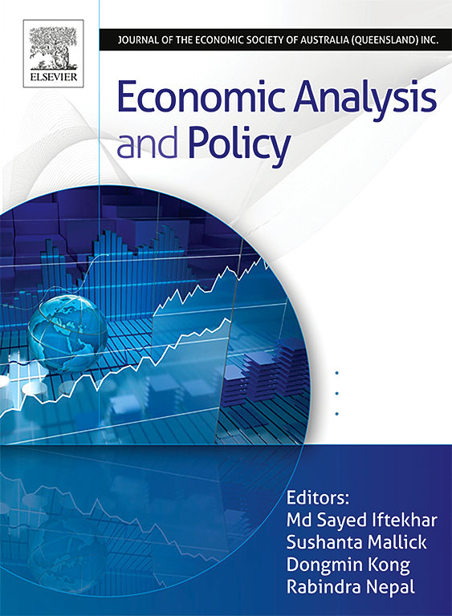
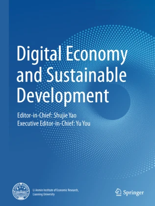

💁♀️ 周胜娣
个人简介
周胜娣 (1999.02)，经济学博士，现任华东政法大学商学院金融系讲师。
2021年毕业于华东师范大学经济与管理学院金融学专业，获经济学学士学位；2026年毕业于华东师范大学经济与管理学院，获经济学博士学位，师从蓝发钦教授。
研究兴趣
- 公司金融
- 法与金融
- 企业信息披露
- 生成式人工智能与金融决策
已发表论文 查看全部
所有论文按发表年份降序排列（* 表示通讯作者）。
-
 世界经济
世界经济
-

EAP -
 外国经济与管理
外国经济与管理
-
 上海经济研究
上海经济研究
-
 投资研究
投资研究
-

DESDDigital Economy and Sustainable Development, 2024.
学术服务
- 上海并购金融研究院兼职研究员
- 担任外国经济与管理》、Emerging Markets Finance and Trade 等国内外学术期刊审稿人
- 2024《公司治理》课程助教
教育经历
-
2023.09 – 2026.06博士经济与管理学院（金融专业） · 华东师范大学
-
2021.09 – 2023.06硕士（后转硕博连读）经济与管理学院（金融专业） · 华东师范大学
-
2017.09 – 2021.06本科经济与管理学院（金融专业） · 华东师范大学
-
2014.09 – 2017.06高中栖霞市第一中学 · 烟台
代表性奖项
- 2026上海市优秀毕业生
- 2026参与教育部人文社会科学研究项目
- 2025博士研究生国家奖学金 (3/200)
- 2025华东师范大学优秀学生
- 2025主持华东师范大学2025年优秀博士生创新能力提升计划项目 (主题：风险投资介入与企业债务违约风险)
- 2025主持编写《2024中国证券市场典型并购案例》(已出版)
- 2024参与国家社会科学基金年度一般项目
- 2024Conference on Trade Patterns and Responses under Multiple Trade Risks 分会汇报，入选论文：Exchange Rate Volatility and Supply Chain Disruption
- 2023第四届浦江论坛优胜奖，获奖论文：融资约束下的企业并购行为：求救动机还是制约条件？
- 2023第九届中国金融管理年会，入会论文：数字化转型、企业适度规模与并购行为
- 2023统计建模大赛上海市三等奖，获奖论文：Determinants of Successful Mergers and Acquisitions in China: Evidence from Machine Learning